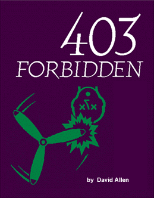

|

A big discussion ensued recently on my ISP's local Usenet group. The topic was the absence of warez
groups from our newsfeed. Warez groups, for the benefit of the uninitiated, are usually devoted to the
posting of pirate software on the Usenet. Since distributing pirate (illegally duplicated) software is
unlawful, most commercial sites refuse to carry the groups, having an understandable fear of FBI or
Secret Service agents launching Waco-style raids on their offices. As the discussion progressed, three
camps developed: The Information Anarchists, Disgruntled Consumers, and Militant Developers.
The first group believes that information should be free for the taking. Knowledge cannot, and should not, be bought and sold. Software pirates are the champions of the down-trodden, leveling the playing field by providing software to everybody, not just to those people with money. This sounds terribly noble, but it ignores a lot a fundamental facts of life, the most important being the power of incentive. Sad to say, altruism is a very weak motivator in human society. If information were free, the flow of information would fall to a trickle. The prime motivator to write something, whether it is a program or a novel, is financial gain. Fame is ego-gratifying, but its most important by- product is its ability to generate money for the wielder. Fame is short-lived; money (managed wisely) will see you through to the grave. There are exceptions to this rule, but they are rare. As champions of the underdog, software pirates fail miserably. The underdog is not the guy who can't afford the latest computer game or utility, but the poor schmo who can't afford a computer. I asked one espouser of the "software-pirates-as-Robin-Hood-philosophy, if he believed so much in helping the poor -- why didn't he hijack a truck full of Performas and Presarios? "That would be stealing," he answered, proving my long-held view that irony is wasted on the clueless. The second group has a more defensible point. The Disgruntled Consumer is the person upon whose back the entire computer revolution has been built. Without the DC's money, Bill Gates would just be another geeky office boy who women avoid. DC's argue most persuasively that they are not "pirating" software, but trying it out, in the spirit of shareware, before they invest their hard-earned money. This argument, while impressive on the surface, loses a good bit of its luster when I ask the advocate if they have paid all their shareware fees. Sheepish looks and foot-shuffling ensue. Still, they point out the inequities and contradictions in shrink-wrap licenses, contracts to which they are bound by simply opening the package. These licenses relieve the seller of any obligations and/or liability for the product, while simultaneously encumbering the user with numerous restrictions and limitations in how the product is used, the violation of which could involve a prison sentence. The Militant Developer will have none of this. Piracy is stealing, pure and simple, and no amount of sugar-coating or equivocating will change that. Software is too complicated a product to produce perfectly, and disclaimers in the license are needed because people are so litigious, and will sue for the most trivial inconvenience. Again, there is some merit to this view, though it still does not address the fact that some buggy software does not involve "trivial" problems, but very serious ones which can cause the consumer no end of grief. So, where does that leave the warez groups? In the cold, I'm afraid. These conflicting arguments, no matter how much merit they may seem to possess (or lack), are entirely irrelevant to the reality of the situation. Warez groups are becoming personae-non-grata as cyberspace becomes more commercial. The 'net is no longer the exclusive playground of technocrats, academics and hackers; it is a multi-billion-dollar business concern where government and corporations decide what is, and is not, permissible. As usual, questions of morality have been supplanted by profit.
|